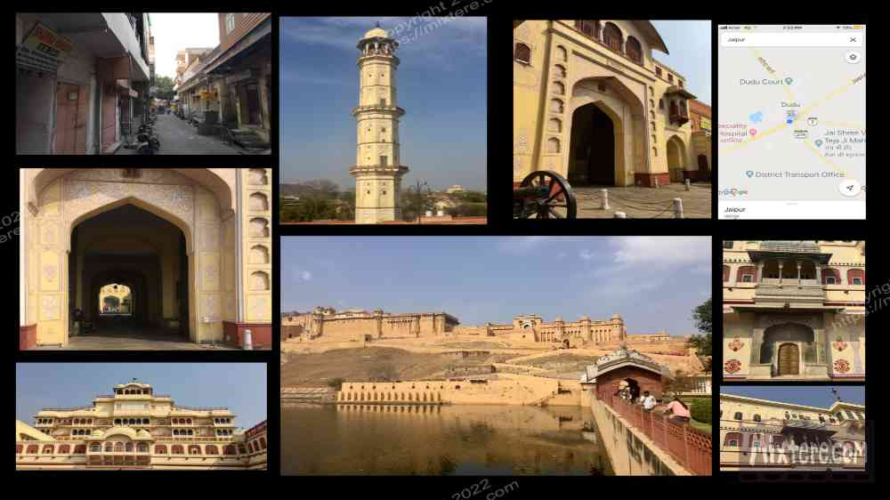
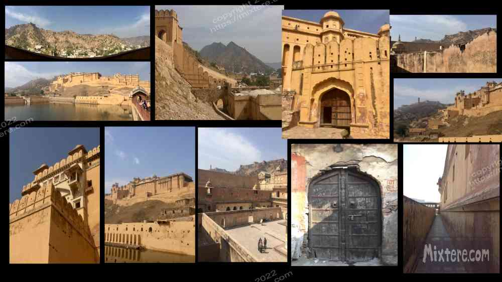

I was running out of steam on the road. Since I was in the area I figured Jaipur was a must see city before I hung up my Rajasthan tour. My travel style is increasingly “less is more," staying in an area for at least three weeks. This helps to get oriented, learn the rhythms and weather and people of a place. But here I was not doing that, only going to a select few destinations on the tourist map. As I mentioned, it is easy to look at a map and say, I want to go there, there and there… and then there. But then trying to live out those travel plans was growing increasingly exhausting. I had been on the road at this point for about four and half months. At times my health had worn quite thin. This is why I chose to linger so long in Puri, Pondicherry and Kovalam.
To continue a bit on this segway, when I go to a large museum, I am similarly overwhelmed. In these instances I also opt for the “less is more” approach. It is better to take the time to absorb some of the artwork than to try to absorb it all. Artists and craftspeople put so much work into the masterpieces behind the glass, it does not make sense to rush through the many exhibits in order to “see it all.” Cities are no different. I think a lot of people do this so that when they are asked they can say, yes, I did see it or yes I did go there. But this approach does not allow the visitor to fully get to know a place or a work of art. Much is missed in the rush.
Anyways, in going to Gujarat and then Rajasthan, I had reembarked on my sight-seeing journey, however minimal it was. I figured I would at least have two Rajasthani cities under my belt. Jaipur seemed a lot more normal and less touristy than Udaipur. It seemed to have normal businesses other than those of the tourist variety. Jaipur is called the pink city due to this color’s dominance in a number of buildings throughout. I noted this as I walked around. I also noticed a plethora of monkeys that would traverse the tops of the buildings and even walk plainly in the street. I guess it is my American heritage that make the sight of monkeys out and about so remarkable. I did my best the steer clear of them and they me.

Through booking dot com I found a guesthouse that was relatively centrally located. I had some regrets upon arriving there. As usual the photos on the site listing had been overly flattering. There had been nothing to show the true scale of things. The mattress was about two inches thick and the room did not have a bathroom. One had to walk outside onto the narrow terrace to reach it. When I did I was appalled by how tiny it was. My hand with fingers extended could not fit into the tiny sink. A large number of people lived in the building of the guesthouse. They were all around, all the time. This did not provide any sense of privacy. Anyway, I had already paid for the lodging so I had to take whatever came with my choice.
Jaipur was a lot larger and more bustling than Udaipur. I found myself getting lost and disoriented a few times. I took some photos of the narrow lanes leading to the guesthouse on either side so that I could find my way back in a pinch. I was glad that I did this once it got dark. For a few days I walked the city, using my phone as my guide to see what I could. My first official visit was to the City Palace. It was ok but left a lot to be desired. Being frugal I hated that to costs for entry were so high. In addition to the inflated foreigner price, there were tiered ticket options that grew increasingly expensive the more access that they gave you. I chose the basic option and I think it cost me about twenty dollars for entry. That is three nights accommodation for me. Once I had that ticket I found myself prevented from entering a lot of areas of the palace. I could only walk up to the outside and try to get a gander within. The guards at the gate, with classic Rajasthani looks including turban and waxed mustache, encouraged me to take a photo of them. Then they demanded payment for the photo. The constant milking of the tourist grated on me and I cut short my visit to the palace.
Walking the city was more rewarding for me, as it always is. In Jaipur there were all sorts of shops and craftspeople making and selling and cooking things for locals, not tourists. For me this made for more of an authentic cultural experience. A man stopped me and chatted me up, insisting that I enjoy a chai with him right there on the street. We had a nice little exchange and thankfully he did not present any hustle or business proposition. This was so nice for a change. I learned from him that Jaipur is a center of the jewel business and also for suit tailoring. I sort of regret that I never had a suit made there. I only have an occasion to wear one every ten years or so, but the chance to afford a custom suit that does not look goofy, ill-fitting or cheap, is a rare one indeed. Perhaps I will visit Jaipur again for this purpose.
As is my tendency when traveling I sought out the library of the city and went inside. It was a wonderful, multi-storied affair full of texts and the dank, dusty smells of old books. I was actually looking for a place to work. I forgot to mention that upon returning to Ahmedabad from Palitana I had bought the apple keyboard. I had a lot of hand-written notes to type. There were a slew of young Indians studying at the library. Busting out the ipad and keyboard in the library turned out to be folly. Such hardware was really exotic in Jaipur and many of them gathered around to admire what one of them called “the prize" of the ipad. These youngsters were all very hospitable and respectful and we had a nice visit. I did not get a lot done though and I was obviously distracting them from their studies. I moved on.